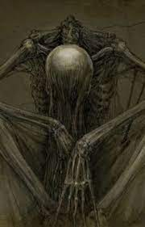

Opinion Personal
Mi opinion personal sobre este artista difiere mucho de la que tengo hacia mi artista favorito actual
el cual es canserbero, pues a pesar de que existan otros representantes del genero dire que tanto
solitario como canserbero son dos caras de la misma moneda pues ambos hablan de la realidad
pero su perspectiva de esta difiere pues canserbero es realista pero con positivismo y fé en ella,
caso contrario con Solitario pues es un artista que da la impresión de haber perdido la esperanza
y cree que la sociedad esta podrida al igual que la realidad que todos quieren creer
Asi terminando la comparación, para mi Solitario es un artista que con sus letras demuestra
lo podrida que esta la sociedad actual lo cual me gusta mucho pues no muchos artistas
tienen el coraje para hacerlo pues nos esta dando golpes de realidad que la mayoria
preferimos evitar.
Para concluir esta es solo mi opinion y no quiero generar ninguna discusión sobre cuál es mejor para mi solitario es uno de mis favoritos y punto.